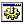

|  | TAObj |
Creates an ActiveX control on the form.
| Properties: | |
| AXName | ActiveX component name. Just for information. |
| AXObject | Property shows ActiveX Browser for ActiveX component selection. |
| Left,Top | Position of control relative to it's parent. |
| Width,Height | Size of control in pixels. |
| Name | Unique name of control, this defines the name of variable where control ID will be kept. It also can be empty, when no variable will be created. |
| TabOrder | This property define in which order controls will be created. This is meaningful when you want switch between controls with Tab key. You also can use TabOrder Visual Editor. Tab order starts from 0. |
| Visible | This is True by default. Set it to False to generate hidden control. This will add GUICtrlSetState(-1, $GUI_HIDE) line. |
None.
None.